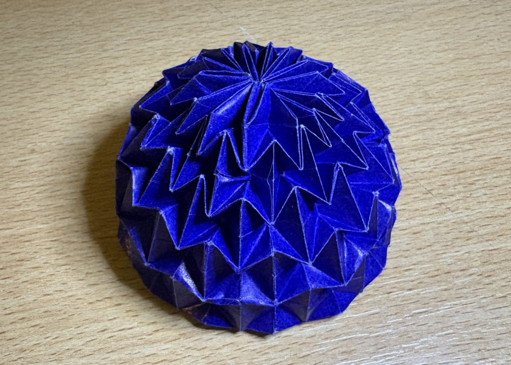
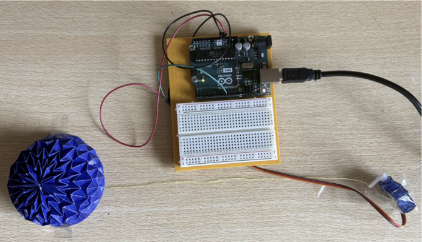
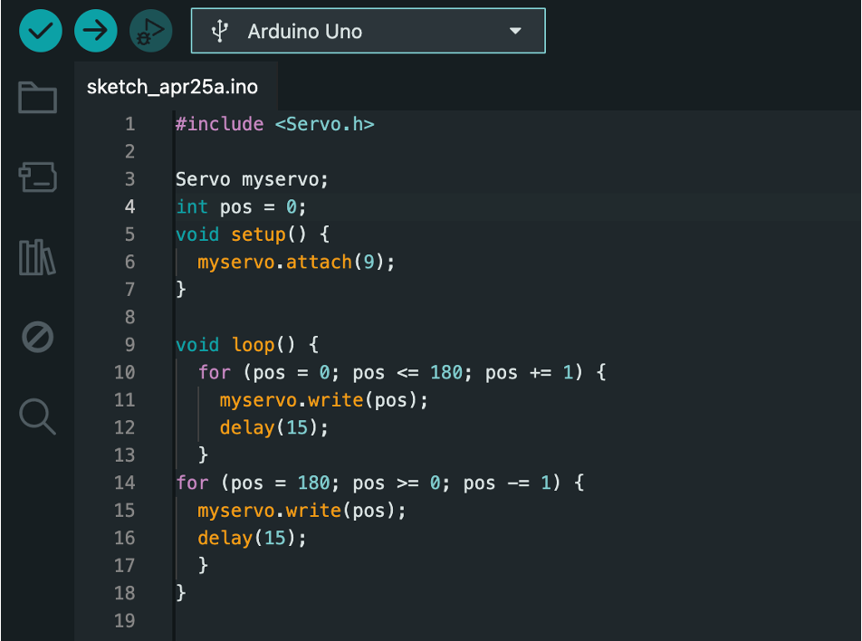

In this week’s learning journal, I chose a spherical origami model. The reference is this video tutorial: Origami Magic Ball (Dragon’s Egg by Yuri Shumakov). This model is composed of multiple triangular creases, and as a whole, it forms a bendable and compressible sphere. Through manual squeezing, it can achieve dynamic changes of contraction and expansion. Therefore, it is very suitable as the basis for a robot structure.

Observation and Motion Analysis
During the folding process, I observed that the structure of this sphere allows for compression in the vertical direction. When pressure is applied from the top and bottom of the sphere, the triangular panels will fold inward, causing the overall volume of the sphere to decrease. After the pressure is released, the paper will naturally bounce back to its original shape. This behavior is very much like a “breathing” process – the cycles of contraction and expansion repeat.
This kind of motion mainly occurs around the vertical central axis of the sphere. The most active creases are located on the valley fold lines between each triangular unit. When the sphere is pulled, these creases will fold inward, and at the same time, the outer edges of the triangles will also rotate slightly to adapt to the change in shape.

Mechanical Implementation
In order to automate this motion, I used a piece of string and a servo motor. I fixed one end of the string at the central point on the top of the sphere, and the other end was connected to the servo motor. The bottom of the sphere was fixed on the desktop. In this way, when the motor rotates, it can pull the upper part of the sphere, causing the sphere to contract.
To enhance the visual effect, I selected a string whose color was very close to that of the desktop, making it almost invisible in the overall device. This choice enables the audience to focus their attention on the motion of the sphere rather than on the mechanical device.

Arduino Programming and Motion Control
I programmed the servo motor using an Arduino board to make it rotate 180 degrees to pull the string, thus compressing the sphere. Subsequently, the motor resets, the string goes slack, and the sphere expands again. This process repeats in a loop, simulating a slow and rhythmic “breathing” motion.
This effect is surprisingly lifelike. The sphere contracts and expands regularly, as if an organism is breathing rhythmically. This imparts an unexpected emotional dimension to the work, endowing a structure originally made of just paper with a sense of life, fragility, and presence.
Reflection
This experiment has given me a deeper understanding of how the geometric structure of origami can serve as the foundation for robotic motion. The pre-set creases in the paper are like flexible joints, and with just a small amount of force, expressive and smooth movements can be induced. At the same time, I have also realized that the choice of materials (such as the invisible string) and the rhythm of the movement (such as the slow breathing-like feeling) will greatly affect the audience’s perception of the work.
If I have the opportunity to continue this project, I hope to try using multiple servo motors to control the movements at different points to achieve more complex deformations, or incorporate sensors so that this “breathing sphere” can respond to environmental changes such as light or sound.
Video link
Shumakov, Y. (2012). Origami Magic Ball (Dragon’s Egg by Yuri Shumakov) [Video]. YouTube. Available at: https://www.youtube.com/watch?v=VgXwSdJNks8 (Accessed: 27 February 2025)